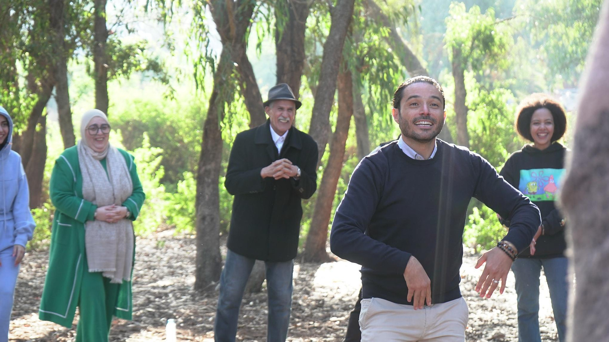
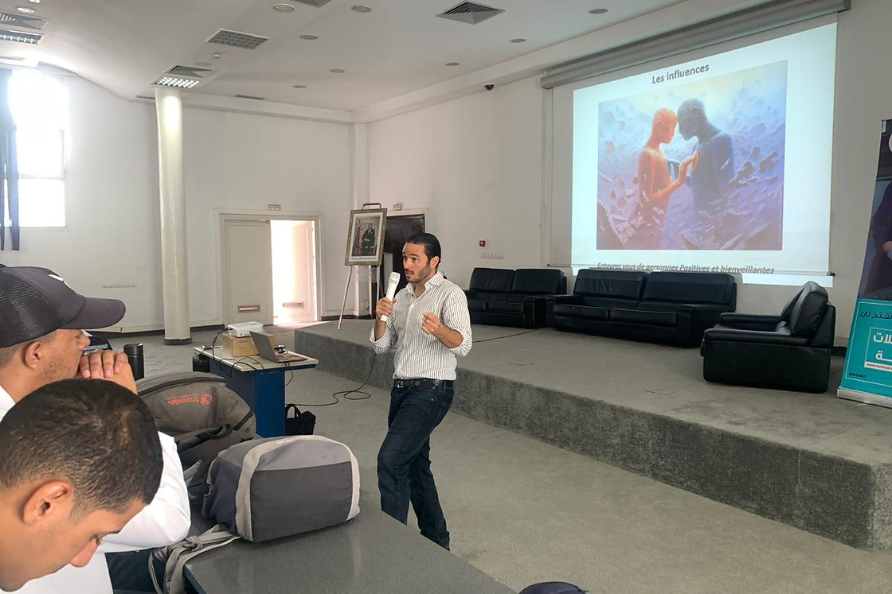
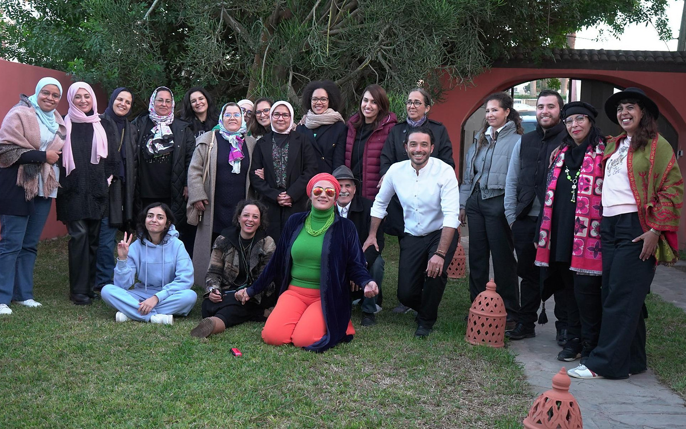
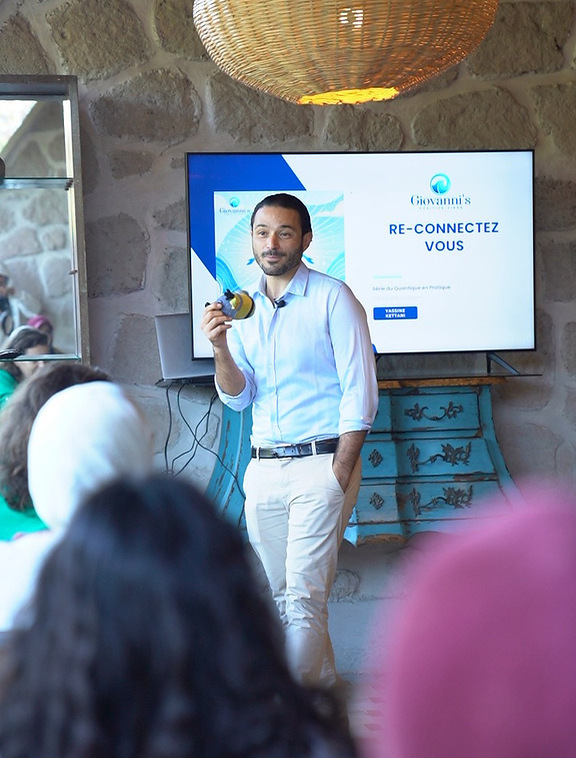
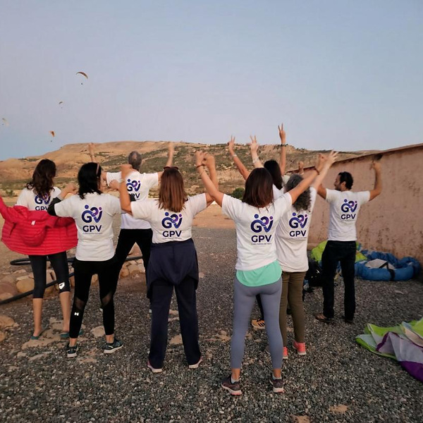
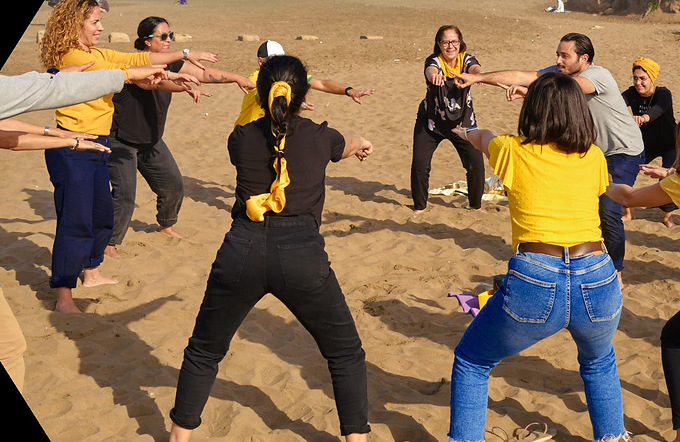
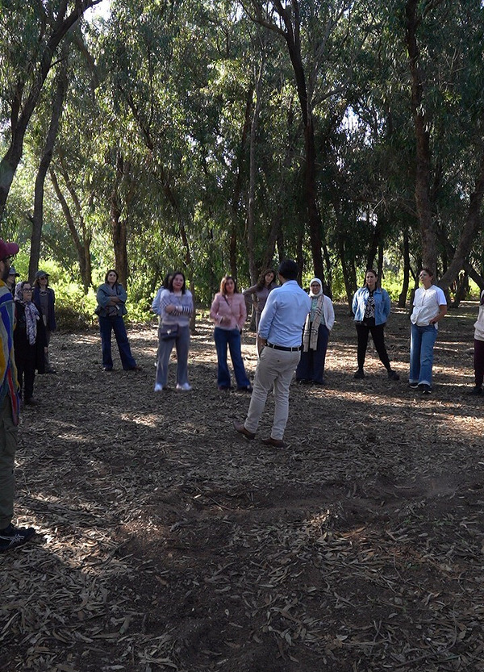
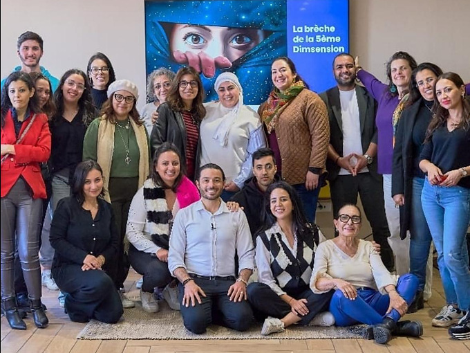
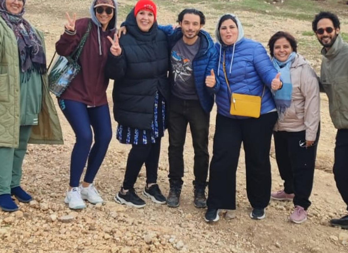
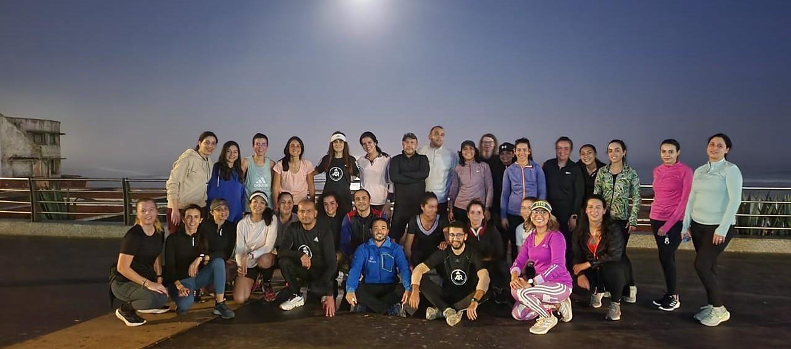

Transformations humaines, relationnelles et managériales
Giovanni's Positive Vibes accompagne les personnes, les équipes et les organisations à transformer les blocages humains et relationnels en décisions plus claires, en coopérations plus solides et en changements durables.

Vos enjeux
Les difficultés d'un projet, d'une équipe ou d'une relation ne sont jamais uniquement techniques. Elles tiennent aussi aux rôles, aux interprétations, aux non-dits et à la qualité des décisions.
Perte de sens, baisse de motivation, absentéisme en hausse.
Tensions fréquentes, climat social dégradé, désaccords évités jusqu'à l'escalade.
Charge mentale durable, pression constante, qualité des décisions en baisse.
Transformation annoncée mais peu comprise, peu appropriée, mal traduite au quotidien.
Notre différence
GPV est née du croisement entre une carrière d'ingénieur et d'entrepreneur habitué à piloter des projets complexes, et un parcours d'accompagnement des dynamiques humaines. Nos interventions ne sont pas conçues depuis une bulle théorique : elles tiennent compte des délais, des responsabilités, des interfaces et des conséquences réelles des décisions.
Le travail porte sur les interprétations, les rôles et les boucles d'interaction — pas uniquement sur le ressenti individuel. Et il ne s'arrête pas à la prise de conscience : chaque dispositif intègre un cadrage, une pratique et un transfert dans le quotidien.

Architecture
Les organisations et les particuliers sont accompagnés selon des cadres séparés : une équipe n'est pas traitée comme un groupe de développement personnel, et un particulier n'est pas réduit à un module de formation standard.
Leadership humain, communication, coopération, gestion de la pression et accompagnement du changement — pour dirigeants, DRH, managers et équipes.
Transitions personnelles, blocages émotionnels, décisions et dynamiques relationnelles — en présentiel à Casablanca ou à distance.
Journées thématiques, retraites, immersions et parapente expérientiel encadré, lorsque l'expérience sert un objectif précis et préparé.
Conférences, podcasts, vidéos, articles et collaborations éditoriales pour rendre accessibles les sujets humains et managériaux.
GPV Organisations
Chaque intervention part d'un échange de cadrage avec le commanditaire, pour distinguer le problème déclaré, le contexte réel et les contraintes. Durées modulables : deux heures, une demi-journée, une journée, deux jours ou parcours en plusieurs temps.
Renforcer la posture managériale pour favoriser l'engagement, la responsabilisation et la performance collective.
Maintenir performance, lucidité et cohésion lorsque la pression devient émotionnelle, identitaire ou conflictuelle.
Communiquer avec clarté, justesse et impact — dire non, demander, recadrer, exprimer un désaccord.
Développer des relations de travail respectueuses et émotionnellement intelligentes pour fluidifier la coopération.
Renforcer la capacité des équipes à s'adapter avec lucidité, engagement et sens des responsabilités.
Une expérience collective reliée à un objectif de travail : préparation mentale, cohésion, puis vol en parapente encadré.
Méthode
Le changement n'est ni un slogan ni une performance émotionnelle. C'est un processus qui demande de la clarté, un engagement réaliste, une méthode adaptée et un environnement suffisamment sûr pour expérimenter autrement.
Clarifier la demande, les acteurs, le contexte et les enjeux moins visibles.
Définir le périmètre, le format, les responsabilités et les limites.
Traduire l'intention en capacités et comportements observables.
Rendre lisibles les dynamiques qui maintiennent le problème.
Mettre en situation, pratiquer, préparer une conversation difficile.
Formaliser repères, engagements, outils et suivi dans le réel.

Le fondateur
Ingénieur ESTP Paris · Intervenant, conférencier et facilitateur d'intelligence collective
Yassine Kettani accompagne des équipes, des managers et des dirigeants dans la conception et l'animation d'expériences collectives à forte valeur humaine. Issu d'un parcours d'ingénieur et d'entrepreneur, il intervient dans des contextes professionnels variés avec une approche structurée, humaine et ajustée aux enjeux réels des organisations.
Son expérience du terrain lui a montré que les difficultés d'un projet ou d'une équipe ne sont jamais uniquement techniques. En 2023, cette conviction prend la forme de Giovanni's Positive Vibes — d'abord des ateliers et des accompagnements, puis des formations, des retraites, des conférences et des contenus.
GPV Expériences & Accompagnements
Un univers distinct du corporate, relié par la même logique de transformation : comprendre, expérimenter, puis repartir avec un engagement concret.
Une journée pour sortir du pilote automatique : observer, comprendre, expérimenter et repartir avec un engagement concret. Apports, exercices, pratiques guidées et temps d'intégration.
Plusieurs jours en petit groupe pour marquer une transition et confronter progressivement une peur ou un seuil personnel. Préparation, travail collectif, rituels et vol en parapente selon les conditions.
Retrouver joie, jeu, spontanéité et expression dans une expérience relationnelle et créative — sans injonction à la pensée positive.
Observer ses biais et ses angles morts pour développer discernement, responsabilité et capacité à réviser une interprétation. Les typologies servent de grilles de discussion, jamais de diagnostic.
Pour les adultes en transition, blocage émotionnel, répétition relationnelle ou décision complexe. Séance d'environ une heure, à Casablanca ou à distance, en séance ponctuelle ou en parcours.
Couples et familles, selon le cadre et la nature du besoin : améliorer le dialogue, comprendre les boucles relationnelles et clarifier les décisions structurantes.
Petit groupe de 11 participants maximum. Préparation, travail collectif, rituels et expérience de parapente encadrée selon les conditions météorologiques.
Les accompagnements proposés ne se substituent pas à un suivi médical ou psychiatrique. Le parapente est utilisé comme support expérientiel encadré par des professionnels du vol, et non comme une pratique de soin.
Sur le terrain
Des personnes réelles, dans des situations réelles — ateliers en entreprise, journées thématiques et retraites au Maroc.








Contact
Chaque intervention est conçue sur mesure, à partir de vos enjeux humains, culturels et stratégiques. Le premier échange sert à clarifier le besoin, les publics, les contraintes et les résultats recherchés — sans engagement.